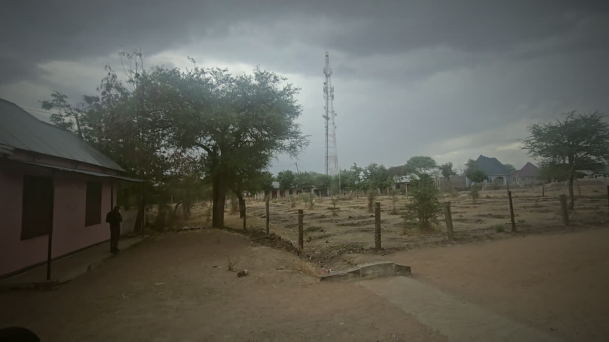

Kusekwa · Tanzania
700 de oameni.
O școală.

Darasa · clasa
O tablă.
O clasă plină.

Kanisa · biserica
Biserica se strânge
în sala școlii.

Kazi · munca
30 de elevi.
O lună.
O biserică și un dispensar.


Clasa a XII-a · Liceul Integritas · o lună în Tanzania
karibu · bine ai venit
12 ianuarie – 10 februarie 2027
Kusekwa · Tanzania
Darasa · clasa
Kanisa · biserica
Kazi · munca
O biserică și un dispensar.

02 · Următorul Drumul